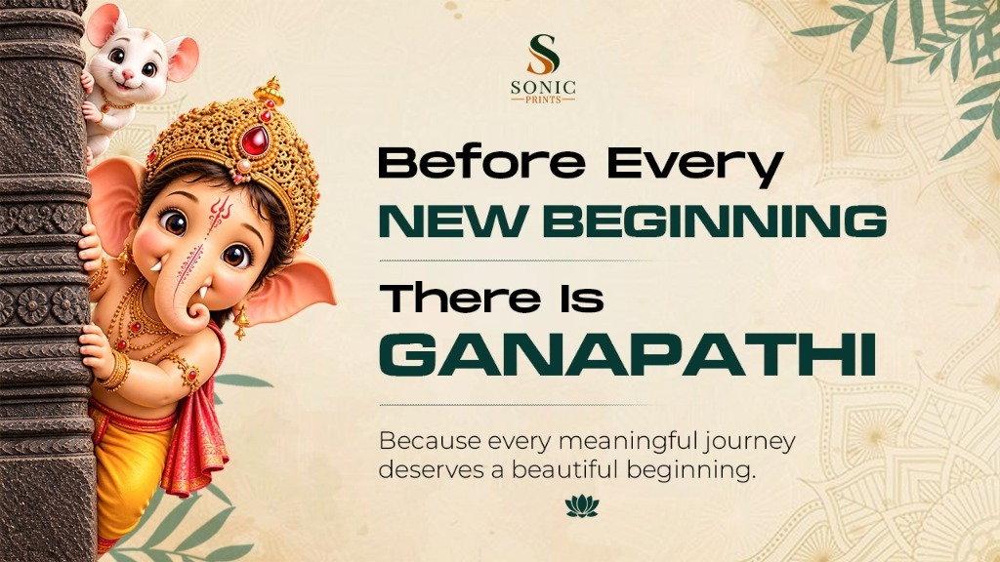
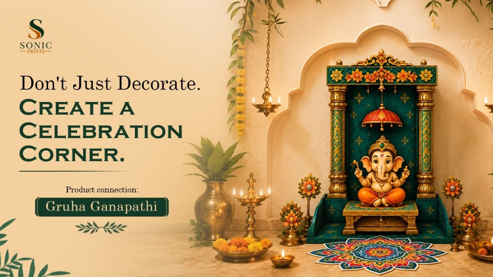
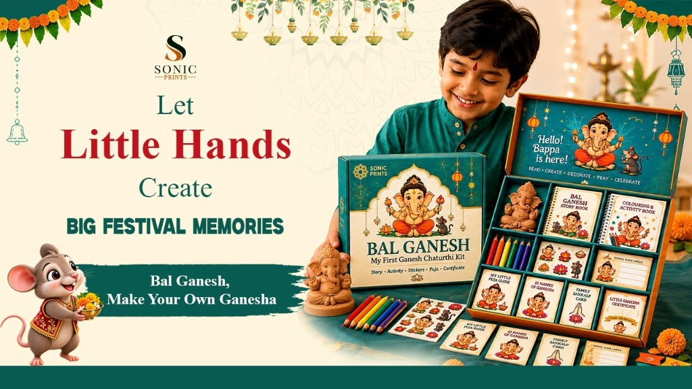
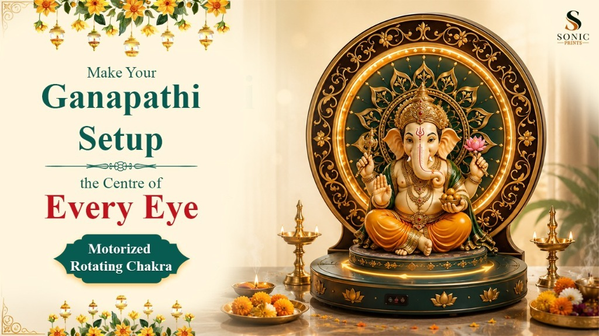
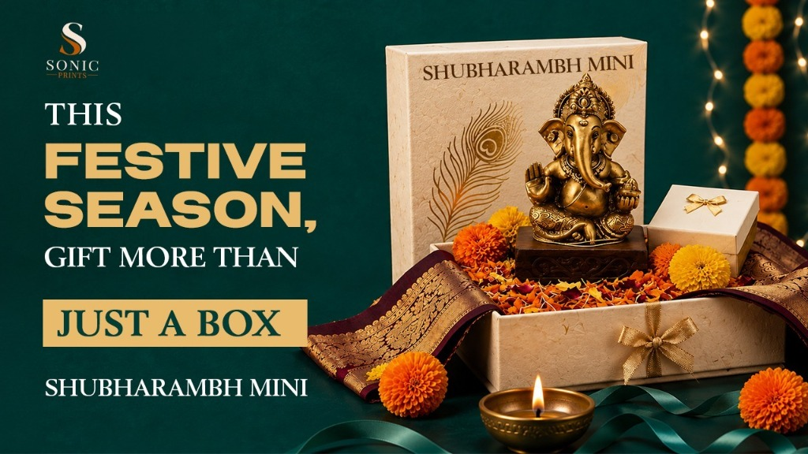

Planning Ganesh Chaturthi 2026? Don't Miss These Celebration Ideas
Every Ganesh Chaturthi begins with excitement and then comes the planning.
Where should we set up the puja? How should we decorate the space? What can the children do? Should we buy gifts? And if it is an office celebration, how do we make it meaningful for everyone?
Before you know it, a joyful festival can turn into a long to-do list.
But here's the thing: a memorable Ganesh Chaturthi celebration doesn't necessarily need a bigger budget, an elaborate setup or dozens of decorations. Sometimes, it simply comes down to choosing the right experiences.
So, before you start planning Ganesh Chaturthi 2026, here are a few celebration ideas that can help make the festival more creative, engaging and enjoyable for families, children and even workplaces.

1. Don't Just Set Up a Puja Space. Create a Celebration Corner.
The puja space is often the heart of the celebration. But creating one can sometimes involve more planning than expected.
Choosing a backdrop, arranging decorative elements, finding the right space and making everything look coordinated can quickly turn into multiple small tasks.
Instead of thinking about each item separately, start with one question: How do you want this space to feel?
A well-planned celebration corner can bring together the puja setup, mandap, décor and festive details in one space.
Consider:
- A clean and organised puja area
- A coordinated backdrop
- Simple decorative elements
- Flowers and festive accents
- Lighting that suits the space
- A central setup that brings everything together
For families looking for convenient Ganesh Chaturthi decoration ideas for home, starting from scratch isn't always necessary.
Sonic Prints' Gruha Ganapathi is designed for people who want to create a dedicated Ganapathi celebration space without spending time sourcing and coordinating every decorative element individually.
It helps turn an ordinary corner into a more organised festive setup—especially useful for busy households or homes with limited space.
The idea is simple: don't just decorate a corner. Create a space where people naturally want to gather and celebrate.

2. Give Children Something to Do, Not Just Something to Watch.
For children, festivals are often remembered through the things they get to do.
But during festival preparation, children can sometimes become spectators while adults manage the decorations, arrangements and other responsibilities.
Instead of asking them to simply watch the celebration, give them a role in it.
This could include:
- Festival-themed colouring
- Creative crafts
- Storytelling sessions
- Simple family activities
- Hands-on DIY projects
- Helping with age-appropriate decorations
One of the best Ganesh Chaturthi activities for kids is something that allows them to participate, create and proudly share what they have made.
For parents looking for an activity-led festival experience, Sonic Prints' Bal Ganesh brings children into the celebration through engaging and creative participation.
Rather than simply giving children something to watch, the idea is to give them an experience they can be part of.
For families looking for something more hands-on, Make Your Own Ganesha adds another creative dimension by turning festival time into an opportunity to create together.
Both experiences can help transform an ordinary festival afternoon into something children actively remember.
Because sometimes the best festival memory for a child is not what they watched—but what they created.

3. Make the Décor Part of the Experience.
When people think about Ganesh Chaturthi decoration, they often focus only on how the final setup will look.
But good décor can do more than make a space beautiful. It can create moments.
Think about where family members will gather. Where will everyone take photographs? What will become the visual highlight of the celebration?
Instead of decorating every available corner, focus on creating one or two spaces that people will naturally notice and enjoy.
Some ideas include:
- A festive backdrop
- A dedicated photo corner
- Coordinated decorative elements
- Floral arrangements
- Warm lighting
- A central visual feature
The challenge with larger setups is often finding that one element that makes the entire space stand out.
Sonic Prints' Motorized Rotating Chakra is designed to add a visually engaging element to a Ganapathi setup, backdrop or celebration area.
Rather than adding more and more decorations, one distinctive centrepiece can create a stronger visual impact and become a natural point of attention.
The goal isn't to decorate more. It's to create something people remember.

4. Turn Festival Preparation into Family Time.
One of the easiest ways to make Ganesh Chaturthi more meaningful is to stop treating preparation as work that needs to be finished.
Preparation itself can become part of the celebration.
Instead of one person managing an endless checklist, involve everyone in small ways.
Someone can help with decoration. Children can participate in creative activities. Family members can organise the celebration space together.
You can even create a simple celebration flow:
- Morning: Prepare the puja and celebration space
- Afternoon: Creative activities and family time
- Evening: Gather, celebrate and capture memories
The exact plan can vary from family to family. What matters is giving everyone a role.
This is also where convenient celebration products can make a difference. When every item has to be sourced separately, preparation can become stressful. But when the right elements are already planned around a specific festival experience, families can spend less time managing arrangements and more time enjoying them.
A celebration often becomes more memorable when people feel involved in creating it.
5. Make Your Ganesh Chaturthi Gifts Part of the Celebration.
Choosing a festival gift sounds simple—until you start looking for one.
Generic gifts may not feel connected to the occasion. Buying multiple items separately can take time. And sometimes, the final gift looks festive but doesn't actually become part of the celebration.
A better approach is to choose something that feels relevant to the occasion itself.
When looking for Ganesh Chaturthi gifts, consider:
- Will the recipient actually use it during the festival?
- Does it feel connected to the celebration?
- Is it suitable for families or individuals?
- Does it create an experience rather than simply being handed over?
This is where Sonic Prints' Shubharambh Mini can become a relevant festive choice.
Instead of choosing something completely unrelated to Ganesh Chaturthi, a festival-focused product can naturally become part of the celebration experience.
That is what makes gifting feel more thoughtful—not necessarily the size of the gift, but its relevance to the moment.
Because a good festival gift shouldn't just be given. It should feel like it belongs to the celebration.

6. Don't Leave Office Celebrations Until the Last Minute.
Ganesh Chaturthi celebrations are no longer limited to homes. Many workplaces also use festivals as an opportunity to bring teams together.
But organising an office celebration comes with a different set of challenges.
HR and Admin teams may need to think about employee participation, decoration, gifting, quantities and coordination—all while managing regular work schedules.
The good news is that a meaningful Ganesh Chaturthi office celebration doesn't need to take over the entire workday.
A few simple ideas can create a festive experience:
- Set up a small celebration area
- Create a photo-friendly backdrop
- Organise a short team gathering
- Include a voluntary creative activity
- Offer thoughtful festival gifts
- Plan décor and gifting in advance
One common challenge for organisations is employee gifting.
When gifts need to be sourced, packed and distributed individually, what starts as a simple festive gesture can quickly become an operational task.
For companies looking for a more organised option, Sonic Prints' Employee Puja Box offers a festival-focused gifting solution designed around the occasion.
It gives organisations a more relevant way to acknowledge the festival while making gifting easier to plan across multiple employees.
For larger teams, early planning is especially important when quantities, packaging and bulk requirements need to be coordinated.
The goal isn't simply to organise another office event. It's to create a small festive moment that brings people together.
Convenience Can Also Be Part of a Good Celebration
One thing that often gets overlooked while planning a festival is time.
Between work, family responsibilities and everyday schedules, not everyone has the time to visit multiple places searching for puja products, children's activities, décor and gifts.
That doesn't mean the celebration has to feel rushed.
The right festival products can solve different planning problems:
- Need a festive home setup? Choose a solution designed around the celebration space.
- Looking to engage children? Add an activity they can actively participate in.
- Want your décor to stand out? Focus on one memorable visual element.
- Searching for a relevant festival gift? Choose something connected to the occasion.
- Planning for employees? Look for solutions that simplify gifting and coordination.
This is where having multiple celebration solutions in one place becomes useful.
The purpose isn't to buy more products. It's to choose the right product for the right part of the celebration.
Less time managing preparation can mean more time actually enjoying Ganesh Chaturthi.
So, What Should You Really Plan for Ganesh Chaturthi 2026?
Before you start shopping, decorating or creating a long checklist, think about one simple question: What kind of experience do you want people to remember?
- A peaceful family celebration
- A beautifully designed Ganapathi corner
- A child's first creative festival activity
- A memorable family photo
- A thoughtful festival gift
- A small celebration that brings an entire team together
Ganesh Chaturthi doesn't have to follow one standard format. You can keep it simple. Make it creative. Involve the children. Add a visual touch. Choose gifts that feel relevant. Bring the celebration into your workplace.
The best celebrations are not necessarily the ones with the most things. They are the ones where every element has a purpose.
For Ganesh Chaturthi 2026, plan beyond the checklist and create moments worth remembering.
Celebrate Your Way with Sonic Prints
From creating a festive corner with Gruha Ganapathi and engaging children with Bal Ganesh and Make Your Own Ganesha, to adding visual impact with the Motorized Rotating Chakra, choosing Shubharambh Mini for festive gifting or planning employee celebrations with the Employee Puja Box—Sonic Prints brings together different ways to celebrate.